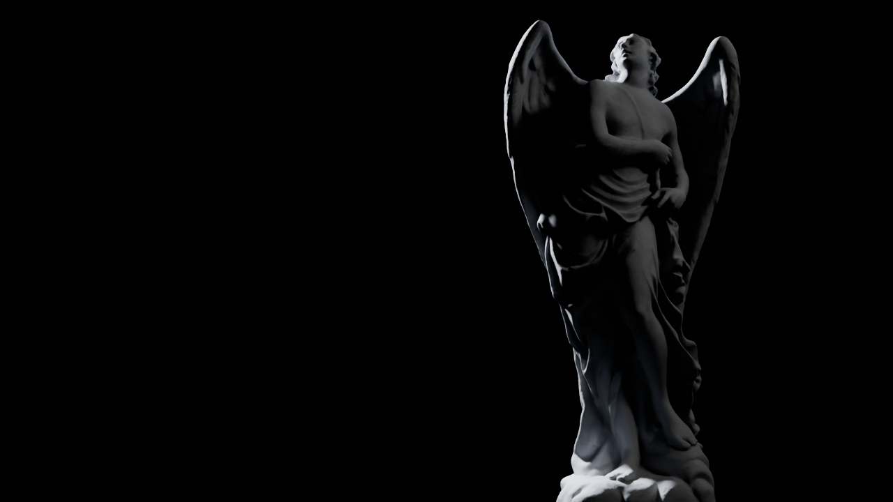
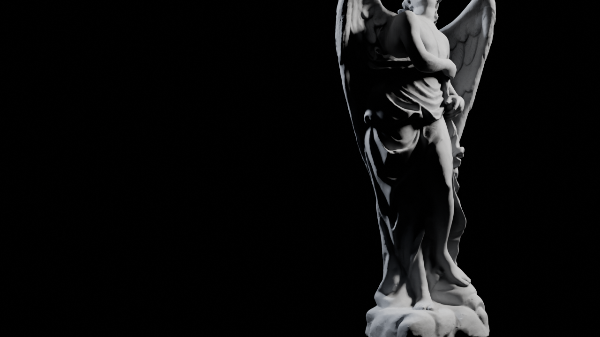
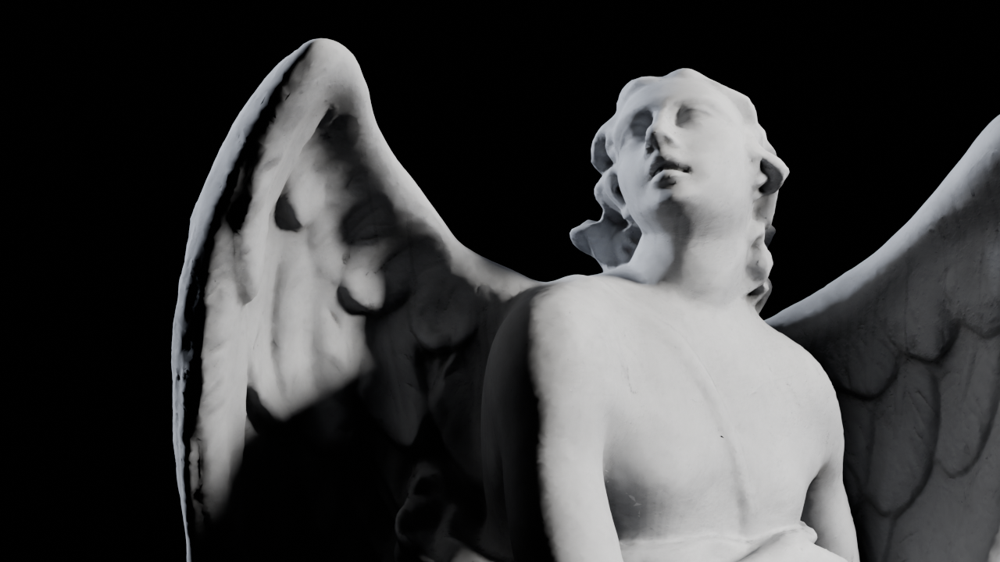
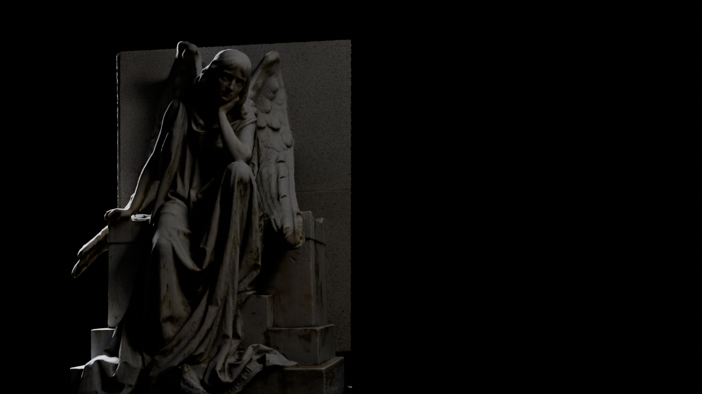
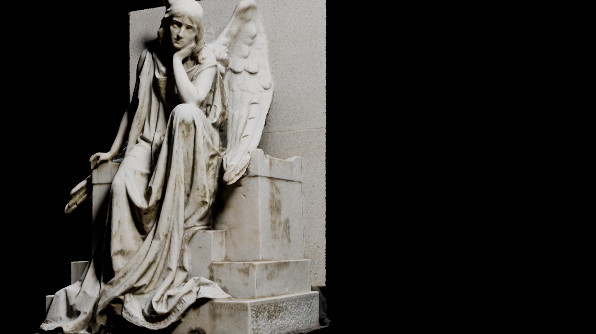
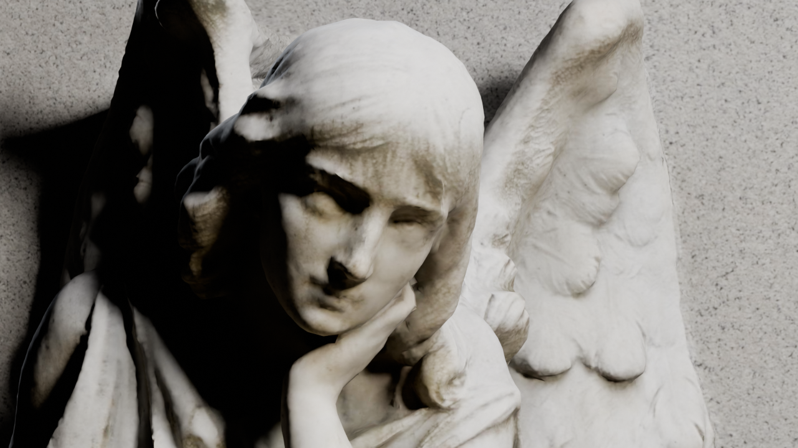
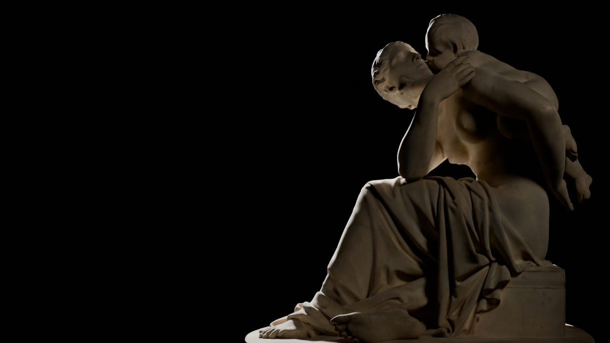
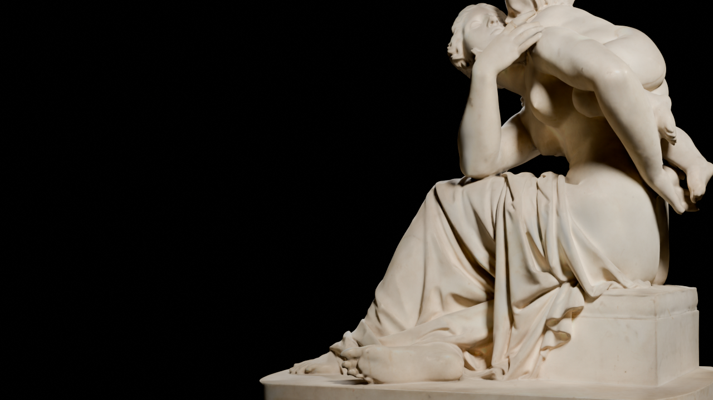
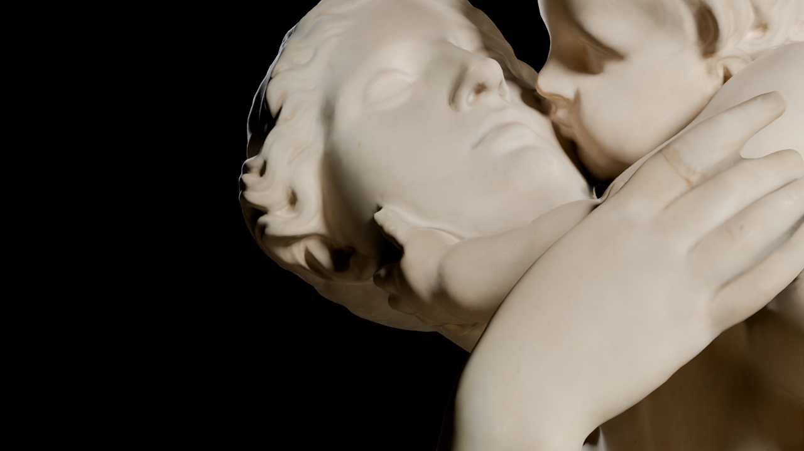

Gate 2 · Act I, the three statues: camera and light, for your approval
Each statue gets three beats as you scroll: emerge (faint light, it rises out of the black), reveal (the key light comes up as the camera turns to a three-quarter view), close (the camera moves in on the face). The story text sits in the empty third of the frame. The statues alternate sides: right, left, right.
1 · Engel (the Angel)



2 · Milan mourning angel (Angel of Death), with her granite wall



Her scan is front-only, so the camera stays within 60° of her front.
3 · Maternal Affection (the Mother)



On the site
- Scroll drives the camera smoothly between the beats. When you stop scrolling, the frame refines to the path-traced look shown here (D8).
- Between statues, the light dies and the next one emerges from black. After the third, the door appears (Act II, approved).
- They're shown here at life size (about 2 m). Low camera angles make them loom; I can scale them up like the forest statues if you'd like.